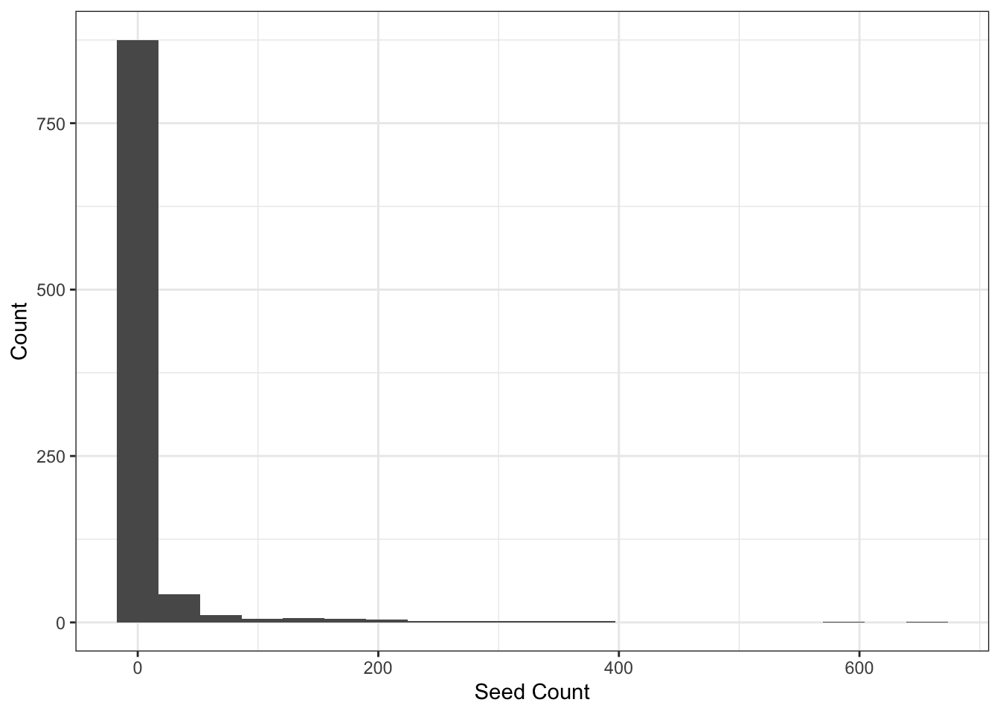

Code
library(here)
library(tidyverse)
library(utils)
library(readr)
library(janitor)
library(dplyr)
library(naniar)
library(ggplot2)
library(performance)
library(effsize)
library(rstatix)
library(flextable)The banner-tailed kangaroo rat, Dipodomys spectabilis, makes large mounds that can be inhabited for years (Schroder and Geluso 1975). These mounds play an important role in their ecosystem that potentially promotes plant species diversity (Guo 1996). Kangaroo rats are considered a keystone species because of the effects they have on the plant community in their habitat (Heske, Brown, and Guo 1993). So, studying the link between plants and these mounds can be important to understanding the way in which plants grow in this habitat. The purpose of this analysis is to identify whether or not there is a relationship between seed count and location on kangaroo rat mounds.
H0: There is no relationship between Kangaroo Rat Mound Location and total seed count.
HA: There is a relationship between Kangaroo Rat Mound Location and total seed count.
Significance level = 0.05
library(here)
library(tidyverse)
library(utils)
library(readr)
library(janitor)
library(dplyr)
library(naniar)
library(ggplot2)
library(performance)
library(effsize)
library(rstatix)
library(flextable)Initial data wrangling:
# reading in the data
kratseed <- read.csv("~/github/ENVS-193DS_final/data/knb-lter-sev.208.102459/sev208_kratseedbank_20120213.txt")
# creating a new object of all columns, but excluding the microhabitat composition rows which are in percentages in the seed count column
seed_data <- kratseed[!kratseed$species %in% c("soil", "dist", "gravel", "litter", "plant"), ] %>%
# making the column names cleaner
clean_names() %>%
# renaming columns
rename(c("location" = "loc", "seed_count" = "seeds")) %>%
# selecting the columns of interest by removing `mnd`,`dir` and `species`
mutate(species = NULL, dir = NULL, mnd = NULL) %>%
# renaming locations
mutate(location = case_when(
location == "B" ~ "Base",
location == "D" ~ "Surrounding",
location == "E" ~ "Edge",
location == "I" ~ "Inter_Space"))Visualizing missing data:
# visualizing missing data
gg_miss_var(seed_data) +
labs(title = "Missing Data Visualization of Mound Locations and Seed Count",
caption = "Visualization shows no missing data for mound locations nor seed counts") +
theme(plot.title = element_text(size = 10, hjust = 0.5)) +
theme(plot.caption = element_text(size = 9, hjust=0.5))
Exploratory Visualization:
# plotting an exploratory visualization
ggplot(data = seed_data, aes(x = location, y = seed_count)) +
geom_jitter() +
labs(title = "Exploratory Visualization of Seed Count Across Mound Locations ",
caption = "Visualization shows the highest seed count
at the base of the mound and decreasing count further
from the mound") +
theme(plot.title = element_text(size = 10, hjust = 0.5)) +
theme(plot.caption = element_text(size = 8, hjust=0.5))
Visually checking for normality of variables and distribution with a histogram and QQ Plot:
# checking histogram for independence of variables and spread
histogram_kseed <- ggplot(data = seed_data, aes(x = seed_count)) +
geom_histogram(bins = 20) +
labs(x = "Seed Count", y = "Count") +
theme_bw()
histogram_kseed
# checking qq plot for normality
ggplot(data = seed_data) +
stat_qq(aes(sample = seed_count)) +
stat_qq_line(aes(sample = seed_count), color = "orange") +
facet_wrap(~ location)
Using the Shapiro Wilk test to check for normal distribution:
# The p-value of the Shapiro-Wilk Test is greater than 0.05. Meaning the data significantly deviates from a normal distribution.
shapiro.test(seed_data$seed_count)
Shapiro-Wilk normality test
data: seed_data$seed_count
W = 0.23462, p-value < 2.2e-16The QQ plot shows that the sample distribution is not linear or normally spread. The histogram visualization shows that the distribution of the seed count data is not normally distributed. And the Shapiro-Wilk test (p-value = 2.2e-16) shows that the data deviates from a normal distribution as well (p-value < 0.05). Therefore, a non-parametric alternative to a one-way ANOVA (Kruskal-Wallis test) is performed to compare the seed counts between rat mound locations.
Kruskal-Wallis Test and table:
# creating a new object for the Kruskal-Wallis Test
kruskal_test <- kruskal.test(seed_count ~ location, data = seed_data)
# creating a readable table of the test results
kruskal_test_table <- tidy(kruskal_test) %>%
mutate(statistic = round(statistic, digits = 3)) %>%
mutate(p.value = round(p.value, digits = 4)) %>%
flextable() %>%
autofit()
kruskal_test_tablestatistic | p.value | parameter | method |
|---|---|---|---|
14.438 | 0.0024 | 3 | Kruskal-Wallis rank sum test |
From the Kruskal-Wallis test, we can conclude that there are significant differences between the treatment groups because the p-value is less than the significance value of 0.05 (p-value = 0.0024). Multiple pairwise comparisons between groups were conducted and we know there is a substantial difference between groups based on the Kruskal-Wallis test’s results, but we don’t know which pairings of groups are different. The function pairwise.wilcox.test() can be used to calculate pairwise comparisons between group levels with different testing corrections.
Pairwise-Wilcox Test and table:
# running poct hoc test to calculate pairwise comparisons between locations using `pairwise.wilcox.test`
pairwise_test <- pairwise.wilcox.test(seed_data$seed_count, seed_data$location)
# creating a readable table of the test results
wilcox_table <- tidy(pairwise_test) %>%
#clean up table
mutate(p.value = round(p.value, digits = 4)) %>%
flextable() %>%
autofit()
wilcox_tablegroup1 | group2 | p.value |
|---|---|---|
Edge | Base | 0.4041 |
Inter_Space | Base | 0.0018 |
Inter_Space | Edge | 0.0551 |
Surrounding | Base | 0.5682 |
Surrounding | Edge | 0.6479 |
Surrounding | Inter_Space | 0.0453 |
The results of the Pairwise Wilcox Test show that not all of the mound locations significantly differ in seed counts, but that the Inter-Space of the mound has a significant difference in seed count between the Base of the mound (p.value = 0.0018), and the Surrounding of the mound (p.value = 0.0453) but has does not show a significant difference in seed counts with the Edge of the mounds (p.value = 0.0551).
We analyzed the difference between seed count at different kangaroo rat mounds at the Sevilleta National Wildlife Refuge in New Mexico. The null hypothesis stated that there is no relationship between seed count and the location of kangaroo rat mounds, while the alternative hypothesis stated that there is a relationship between these two variables.
Our analysis using a Kruskal-Wallis test and Pairwise Wilcox test showed that there is a relationship between seed count and location. The pairwise Wilcox test showed that there is a significant difference in the number of seeds found at the base and surrounding areas of the mound when compared to inter-space locations. The p-values we calculated from the Pairwise Wilcox test were 0.0018 for the base of the mound and 0.0453 for the surrounding areas, which are both less than the significance level of 0.05. So, we reject the null hypothesis.
Biologically, this means that kangaroo rat mounds have more seeds than the space between them, which indicates that there is a link between kangaroo rats and seed dispersal. The following plot shows the relationship between seed count and location. The table also shows the exact seed count per location. The difference between the seed count in inter-space areas and other locations is made clear by this plot.
# creating a new object for the sum of seed counts per location
totalseedcount <- aggregate(data = seed_data, seed_count ~ location, FUN = sum)
totalseedcount location seed_count
1 Base 6662
2 Edge 1012
3 Inter_Space 377
4 Surrounding 2607# creating a figure of the total seed count data
ggplot(data = totalseedcount, aes(x = location, y = seed_count, fill = location)) +
# creating a column figure
geom_col() +
# adding labels
labs(x = "Kangaroo Rat Mound Locations",
y = "Total Seed Count",
caption = "Total of seed counts per Kangaroo rat mound locations.
Data source: Koontz and Simpson (2010), The composition of seed banks
on kangaroo rat (Dipodomys spectabilis) mounds in a Chihuahuan Desert grassland",
title = "Total Seed Count for Each Kangaroo Rat Mound Locations", color = "location") +
theme_classic() +
# choosing different colors for each location
scale_fill_manual(values = c("lightgreen", "lightpink", "lightgrey", "lightblue")) +
# adjusting/edits
theme(
legend.position = c(0.85, 0.7),
legend.text = element_text(size = 11),
legend.title = element_text(size = 11),
# clear background
panel.grid = element_blank(),
# font, position, and sizes of lables
axis.text = element_text(size = 7),
axis.title = element_text(size = 9),
plot.title = element_text(size = 12, hjust = 0.5),
plot.caption = element_text(size = 7, hjust = 0.5))
Shrubification is the expansion of woody shrubs in the Arctic tundra (Seaver 2022). Shrubification is important to study because it leads to a shift in the carbon balance in the Arctic, which can cause a change in plant composition (Mekonnen et al. 2021). These shrubs change the microclimate as well, altering surface albedo, soil temperature, and permafrost stability (Aartsma et al. 2021). Because shrubification changes the local environment, it can affect the flowering phenology of plants (Seaver 2022). Our analysis is to determine how seed count varies with plot type, plant species, and total number of plant inflorescences.
H0: There is no relationship between treatment, species, seed count, and number of inflorescences.
HA: There is a relationship between treatment, species, seed count, and number of inflorescences.
Significance level: 0.05
# model packages
library(MASS)
library(lme4)
library(glmmTMB)
# diagnostics and model info
library(DHARMa)
library(MuMIn)
library(ggeffects)
library(lmtest)
library(broom)
# general usage
library(tidyverse)
library(skimr)
library(GGally)
library(flextable)# reading in seed counts data
seeds <- read_csv(here("data", "knb-lter-nwt.297.1", "shrubstudy_seed_ctwt.ms.data.csv")) %>%
# select the columns of interest
dplyr::select(treatment, species, total_nr_infl, nr_seeds) %>%
# change variable names to be more descriptive
mutate(treatment = case_when(
treatment == "control" ~ "open",
treatment == "shrub" ~ "shrub")) %>%
# rename columns for readability
rename("num_inflorescences" = total_nr_infl, "num_seeds" = nr_seeds)gg_miss_var(seeds)
Figure 1. Number of missing values from the seeds data frame.
Subsetting the data by dropping NAs:
Since I took this data set from online, I do not know why there are NA values so for the purpose of this analysis, I will exclude them.
seeds_subset <- seeds %>%
# drops rows with NA values in the num_seeds column
drop_na(num_seeds)seeds_subset %>%
# select variables to include in plot
dplyr::select(treatment:num_inflorescences) %>%
# create pairs plot
ggpairs()ggplot(data = seeds_subset, aes(x = num_seeds)) +
geom_histogram(bins = round(2*nrow(seeds_subset)^(1/3)),
fill="#45B39D",
color = "#e9ecef") +
labs(x = "Number of Seeds", y = "Count",
title = "Histogram of Number of Seeds")Build generalized linear models (GLM)
We are using a linear regression model because we are dealing with discrete (count) data.
# GLM with all predictor variables (Poisson)
model1 <- glm(num_seeds ~ treatment + species + num_inflorescences, data = seeds_subset, family = "poisson")
# GLM with treatment as predictor variable (Poisson)
model2 <- glm(num_seeds ~ treatment, data = seeds_subset, family = "poisson")
# GLM with species as predictor variable (Poisson)
model3 <- glm(num_seeds ~ species, data = seeds_subset, family = "poisson")
# GLM with treatment and species as predictor variables (Poisson)
model4 <- glm(num_seeds ~ treatment + species, data = seeds_subset, family = "poisson")
# GLM with treatment and number of inflorescences as predictor variables (Poisson)
model5 <- glm(num_seeds ~ treatment + num_inflorescences, data = seeds_subset, family = "poisson")
# GLM with species and number of inflorescences as predictor variables (Poisson)
model6 <- glm(num_seeds ~ treatment + num_inflorescences, data = seeds_subset, family = "poisson")
# GLM with all predictor variables (negative binomial)
model7 <- glm.nb(num_seeds ~ treatment + species + num_inflorescences, data = seeds_subset)
# GLM with treatment as predictor variable (negative binomial)
model8 <- glm.nb(num_seeds ~ treatment, data = seeds_subset)
# GLM with species as predictor variable (negative binomial)
model9 <- glm.nb(num_seeds ~ species, data = seeds_subset)
# GLM with number of inflorescences as predictor variable (negative binomial)
model10 <- glm.nb(num_seeds ~ num_inflorescences, data = seeds_subset)
# GLM with treatment and species as predictor variables (negative binomial)
model11 <- glm.nb(num_seeds ~ treatment + species, data = seeds_subset)
# GLM with treatment and number of inflorescences as predictor variables (negative binomial)
model12 <- glm.nb(num_seeds ~ treatment + num_inflorescences, data = seeds_subset)
# GLM with species and number of inflorescences as predictor variables (negative binomial)
model13 <- glm.nb(num_seeds ~ species + num_inflorescences, data = seeds_subset)Model9
plot(simulateResiduals(model9)) # okModel11
plot(simulateResiduals(model11)) # okThese are the only two models that met the GLM assumptions.
# model9 and model11 meet the assumptions
MuMIn::model.sel(model9, model11)Model selection table
(Intrc) specs trtmn family init.theta df logLik AICc delta
model11 3.706 + + NB(0.7556,l) 0.756 8 -603.151 1223.1 0.00
model9 3.592 + NB(0.7385,l) 0.738 7 -604.827 1224.3 1.16
weight
model11 0.642
model9 0.358
Abbreviations:
family: NB(0.7385,l) = 'Negative Binomial(0.7385,log)',
NB(0.7556,l) = 'Negative Binomial(0.7556,log)'
Models ranked by AICc(x) # results: model11 has the lowest AIC# model summaries
summary(model11)
Call:
glm.nb(formula = num_seeds ~ treatment + species, data = seeds_subset,
init.theta = 0.7555861374, link = log)
Deviance Residuals:
Min 1Q Median 3Q Max
-2.3518 -1.1203 -0.3413 0.1850 3.0659
Coefficients:
Estimate Std. Error z value Pr(>|z|)
(Intercept) 3.7064 0.2556 14.498 < 2e-16 ***
treatmentshrub -0.3528 0.1901 -1.856 0.06352 .
speciesCARRUP -3.2736 0.3487 -9.389 < 2e-16 ***
speciesGEUROS -1.8171 0.3082 -5.895 3.75e-09 ***
speciesKOBMYO -0.6193 0.2930 -2.114 0.03452 *
speciesMINOBT -0.8756 0.3067 -2.855 0.00431 **
speciesTRIDAS 0.2573 1.1900 0.216 0.82879
---
Signif. codes: 0 '***' 0.001 '**' 0.01 '*' 0.05 '.' 0.1 ' ' 1
(Dispersion parameter for Negative Binomial(0.7556) family taken to be 1)
Null deviance: 314.46 on 181 degrees of freedom
Residual deviance: 206.88 on 175 degrees of freedom
AIC: 1222.3
Number of Fisher Scoring iterations: 1
Theta: 0.7556
Std. Err.: 0.0872
2 x log-likelihood: -1206.3020 # confidence intervals
confint(model11) 2.5 % 97.5 %
(Intercept) 3.2527339 4.22656892
treatmentshrub -0.7225292 0.02288965
speciesCARRUP -3.9625480 -2.60549229
speciesGEUROS -2.4379210 -1.22225041
speciesKOBMYO -1.2118519 -0.06147120
speciesMINOBT -1.4965401 -0.27850378
speciesTRIDAS -1.5367074 3.80558289# adjusted R2 values
r.squaredGLMM(model11) R2m R2c
delta 0.4477142 0.4477142
lognormal 0.5640701 0.5640701
trigamma 0.2932060 0.2932060# report model object results in table
table <- tidy(model11, conf.int = TRUE) %>%
# change the estimates, standard error, t-stats to round to 2 digits
mutate(across(estimate:conf.high, ~ round(.x, digits = 2))) %>%
# replace the p values below the signifcance level with < 0.05
mutate(p.value = case_when(p.value < 0.05 ~ "< 0.05")) %>%
# make it into flex table
flextable() %>%
# change header labels
set_header_labels(std.error = "standard error",
statistic = "F-statistic",
p.value = "p-value",
conf.low = "low confidence interval",
conf.high = "high confidence interval")
# fit it to the viewer
autofit(table)term | estimate | standard error | F-statistic | p-value | low confidence interval | high confidence interval |
|---|---|---|---|---|---|---|
(Intercept) | 3.71 | 0.26 | 14.50 | < 0.05 | 3.25 | 4.23 |
treatmentshrub | -0.35 | 0.19 | -1.86 | -0.72 | 0.02 | |
speciesCARRUP | -3.27 | 0.35 | -9.39 | < 0.05 | -3.96 | -2.61 |
speciesGEUROS | -1.82 | 0.31 | -5.89 | < 0.05 | -2.44 | -1.22 |
speciesKOBMYO | -0.62 | 0.29 | -2.11 | < 0.05 | -1.21 | -0.06 |
speciesMINOBT | -0.88 | 0.31 | -2.85 | < 0.05 | -1.50 | -0.28 |
speciesTRIDAS | 0.26 | 1.19 | 0.22 | -1.54 | 3.81 |
We determined that the model that used treatment and species as predictor variables was the best for this analysis. This model was chosen because it has the lowest AIC of the models that meet the assumptions of GLM. A low AIC indicates that this is the simplest explanation for the relationship. The results of our analysis showed that seed count was significantly related to the species CARRUP, GEUROS, MINOBT, and KOBMYO since the p-values for those were less than the significance level of 0.05. Species TRIDAS can be excluded from this analysis because there are significant missing seed count data for that specific species.
So, we can reject the null hypothesis because there is a statistical significant relationship between at least two variables. Biologically, this means that there is a relationship between species and seed count.
This is a plot of the model that we used. This visualization shows the relationship between seed count, plant species, and treatment (plot type).
# visualization for model 11
ggplot(data = model11, aes(x = species, y = num_seeds, fill = treatment)) +
geom_boxplot() +
labs(x = "Species",
y = "Seed Count",
title = "Number of Seeds vs Plant Species and Plot Type (Open or Shrub)") +
theme_gray() +
theme(
# font, position, and sizes of labels
axis.title = element_text(size = 9),
plot.title = element_text(size = 12, hjust = 0.5),
plot.caption = element_text(size = 7, hjust = 0.5))